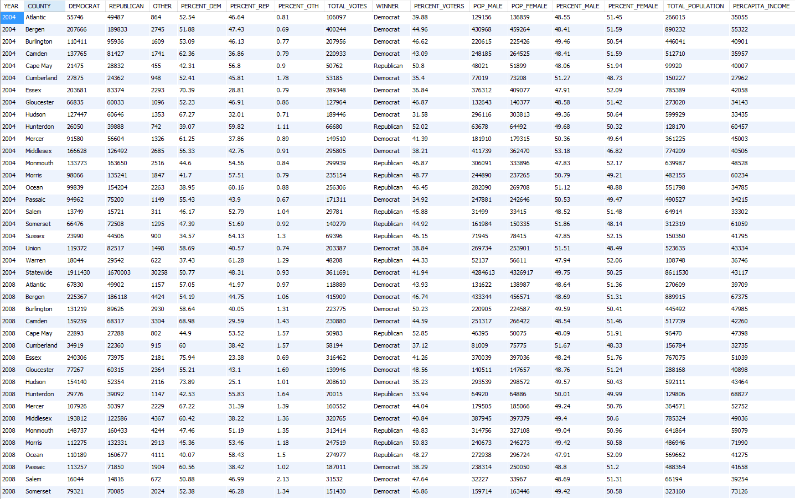

NJData
Database Schema
2004NJ Table
2008NJ Table
2012NJ Table
2016NJ Table
pastNJ Table

Note that this table combines the 2004, 2008, and 2012 tables - slightly useful, slightly redundant.
Statewide Table
Note that this table takes the data from 2004, 2008, 2012 statewide entries.
Built with ♥ by
Keen IO